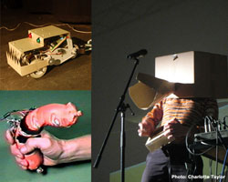
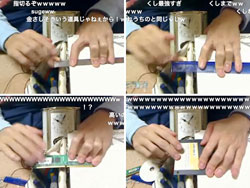
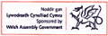
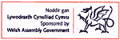

大東京を手中に収めるのは誰だ？！（電気的な意味で）
電気で変なことしてる集いドークボットTΩKYΩが今度は「コンテスト」を公募！！
「誰でも５分間のプレゼン／ライブが出来る。」から
「誰でもコンテストを開催出来る。」へのアップグレード？！
大東京の夜景をバックに勝ったり負けたりしませんか？！
| 会場： |
リクルート･サウスホール
（グラントウキョウサウスタワー23F）>ココ 東京駅八重洲南口徒歩1分 >Google map |
＊会場への入り方
当日、入場の際にICカードが必要になります。
2階ホール（ビルの入り口入ってエレベータで上がったところ）でスタッフからカードを受け取って、23階までお越し下さい。
お帰りの際は、カードの返却をお忘れないようお願いいたします。
当日、入場の際にICカードが必要になります。
2階ホール（ビルの入り口入ってエレベータで上がったところ）でスタッフからカードを受け取って、23階までお越し下さい。
お帰りの際は、カードの返却をお忘れないようお願いいたします。
|
|
コンテストの募集は締め切りました。ご応募ありがとうございました！>コンテスト詳細はこちら
＊＝ブース出展あり
| コンテスト | エントリー | 内容 |
| 1. デバイスダンボール・コンテスト | sakehito | 巨大キーボードと空飛びロボ２台による演奏 |
| TETRASTYLE ＊ | ダンボールを使ったディスプレイ装置 http://tetrastyle.blogspot.com/ | |
| 2. 実演販売コンテスト | 面白法人 カヤック ＊ | YUREXのデモ即売会 http://bbu.kayac.com/ |
| 3. チャレンジ2,009 | jax86 | 釘宮病患者のための萌えプチオートプッシャー |
| super utako & 23N! | Ningen Dog http://ningendog.com | |
| 4. なつガジェコンテスト by Engadget Japanese |
jax86 ＊ | ・ThinkPad 701cs ・DEC HiNote UltraII ・Candra2 (NP-50J) ・ThinkPad 535E ・ThinkPad 560X ・ThinkPad 600E ・MC-K1 ・コミパル MT-200/MT-300S ・MC-CS12 ・HC-1200 ・MC/R500 |
| ろんぱお | FJIFILM製FD-A2 スマートメディア用フロッピーディスクアダプター | |
| 増井俊之 | ||
| 5. ジャスト5ミニッツ・ライブコンテスト | Nunk On Droise6 | http://www.cho-yaba.com/works/nunkondroise.html |
| Caltier Santos Sweet Lady | MAX/MSP+GAINER+蛍光灯でのパフォーマンス http://www.youtube.com/watch?v=KaNtd6njSD0 @dorkbot tokyo http://www.youtube.com/watch?v=uO53FErThog | |
| 6. 3分間ハッキング・コンテスト | tokui, sato | 液晶ディスプレイをハック http://www.vogue.is.uec.ac.jp/PET/ |
| 23N! ＊ | KP2PDA http://www.youtube.com/watch?v=EQCaGFK9bZI | |
| David Kier | ||
| 7. 手芸デバイスコンテスト by fabo |
神村工業 ＊ | ケアベアのmp3player |
| Alexis ZERROUG （AKARI DOll) ＊ |
アカリドールズプロジェクト報告 | |
| petite pisseuse ＊ | ミュージシャン・イトケンとコラボした抱きしめると音楽/音のでるオリジナル縫いぐるみ、その他 | |
| It's a Donnie world | ||
| syano | 飾れて遊べるクロスステッチ楽器布タイロフォン http://www.youtube.com/watch?v=wEmzqt2hpLs | |
| なすこ | 手芸LED照明 | |
| 8. provisions arrives allowed users growth by aekleybill |
hgw(人) | http://aekleybill.com/ |
| suzukiiiiiiiiii | ||
| ブース出展のみ | 藤本直明 ＊ | 磁性流体ビジュアライザ http://ad.justblog.jp/n/2009/07/post-e07f.html 一円玉飛ばし機 http://journal.mycom.co.jp/articles/2009/06/24/mtm3/004.html |
| MAKE: Japan ＊ | ||
|  |
勝ち負けで言ったら負けの方のロボットを作らせたら右に出る者がいない、フランス出身のキチdeガイ。ロボット同士をｼｼさせたり、ソーセージに「I'm Sausage」と言わせたり、自らパフォーマンスしたり、寝たり起きたりメシ食ったりしながらドーキーな事のために命賭けで海を飛び越え来日する！！ http://www.zprod.org/ |
|  |
はからずもニコ動に突如現れた定規演奏家＝「モノサシスト」。 ジョーシキでは測ることの出来ない幅ｘ奥行きｘ高さを携え、 マイナーイベントにメジャーで殴り込み！！ 数センチのダイナミズムを見逃すな！！ ニコニコ動画：http://www.nicovideo.jp/watch/sm5491555 YouTube：http://www.youtube.com/watch?v=kiY_F0Ca4ao ニコニコ動画(マイリスト)：http://www.nicovideo.jp/mylist/6688434 |

|
1992年よりバー・メタモルフォーゼを経営。 信念無きまゝ現在に至る。 風青し土塀の上の草そよぐ 酔水 |

|
PDAを操るノイズアーティスト。 1995年 ノイズユニット”道産子アナル”として東京アンダーグラウンドシーンにて活動を開始。以後、SAM2名義でのソロライブ活動／椎名林檎ツアーのオープニングアクト／バトルマシン・パフォーマンス集団”超強都市カイライバンチ”のパイロット／楽器らしからぬ楽器を使った即興ユニット “TronOrchestra”など、精力的に活動中。中国在住。 http://www.myspace.com/sam2jp |
秘密博士 & エキソニモ・センボー (fromﾄﾞｰｸﾎﾞｯﾄ)
「最近はブレッドボードで回路を組んで、簡単な実験をするものの、浅い知識のために深くはまれず悔しい日々を送っております。
趣味はムードコーラスの研究と80年代のCM集めです。」by秘密博士
kuknacke
頭に浮かぶ理想の音楽を形にできる男。PANTYレーベルよりニューアルバム「ESP」絶賛発売中！ http://p-a-n-t-y.com/kuknacke/

 

>>過去のドークボットイベント